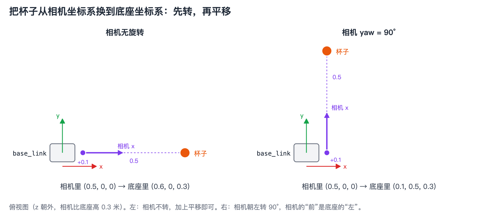
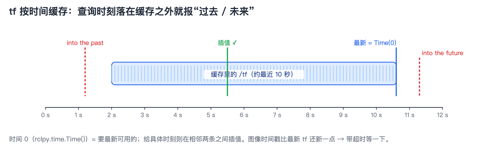
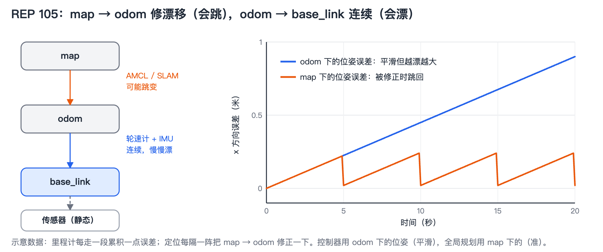

第 12 章 · tf2：坐标变换树
本地运行
git clone https://github.com/wikieden/ros2-from-scratch
cd ros2-from-scratch/code/notebooks
pip install jupyterlab torch numpy
jupyter lab ch12_tf2.ipynb也可以下载后直接用 VS Code 打开 .ipynb 运行。需要 GPU 的章节在 Colab 里选「代码执行程序 → 更改运行时类型 → GPU」。
本章回答：相机看到杯子在"相机前方 0.5 米"，机械臂要的是"杯子相对底座在哪"，这个换算谁来做？机器人身上几十个坐标系，怎么管？为什么 tf2 总报"变换在未来 / 过去"？
讲解日期：2026-11-13 · 上一章：第 11 章 时间与托管节点 · 下一章：第 13 章 URDF 与 RViz
对应原文：ros2_documentation/source/ROS-Framework/interfaces/About-Tf2/About-Tf2.rst（Position 一节）；ros2_documentation/source/ROS-Framework/interfaces/Working-with-interfaces/Quaternion-Fundamentals.rst；ecosystem/docs.nav2.org/docs/getting_started/navigation_concepts/state_estimation.md（REP 105）（路径相对ros2/materials/）
对应 study-plan 阶段 D1、D2，动手里程碑 R-M6 前半。
本章缩写：tf2 = transform library 第 2 版（变换 / 库）；TF = transform（变换）；REP = ROS Enhancement Proposal（ROS / 改进 / 提案：ROS 社区的约定文档）；SLAM = Simultaneous Localization And Mapping（同时 / 定位 / 与 / 建图）；AMCL = Adaptive Monte Carlo Localization（自适应 / 蒙特卡洛 / 定位）；IMU = Inertial Measurement Unit（惯性 / 测量 / 单元）；VIO = Visual-Inertial Odometry（视觉 / 惯性 / 里程计）；GPS = Global Positioning System（全球 / 定位 / 系统）；slerp = spherical linear interpolation（球面 / 线性 / 插值：旋转之间的插值，代码对照里提到）。全部缩写见 附录 · 缩写与术语表
本章先看总图，再分 3 步：
| 步 | 内容 | 状态 |
|---|---|---|
| 0 | 总图：map → odom → base_link → 传感器，一次查询怎么沿树走 | ✅ |
| 1 | 坐标系与变换：平移 + 旋转（四元数），怎么串起来 | ✅ |
| 2 | 树、时间缓冲、REP 105 的标准坐标系 | ✅ |
| 3 | 代码与工具：广播、静态广播、监听、tf2_echo、view_frames |
✅ |
讲解
总图 · 一棵带时间的树

可交互版：animations/12-tf-tree.html（内置浏览器：http://localhost:8340/12-tf-tree.html）。
tf2 是什么：它记录机器人上所有坐标系之间的关系，组织成一棵树，并且按时间缓存（默认缓存最近 10 秒左右）。你可以问它任意两个坐标系在任意时刻的关系（ROS-Framework/interfaces/About-Tf2/About-Tf2.rst，下称"tf2 文档"），例如：
- 5 秒前，头部相对世界在哪？
- 夹爪里那个物体，相对底座的位姿是什么？
- 底盘现在在地图的哪个位置？
类比：家谱。 每个人只需记住"我和父亲的关系"，要算你和远房表亲的关系，沿着家谱往上找到共同祖先、再往下走就行。tf2 里每个坐标系只需要发布"我相对父坐标系在哪"。
第 1 步 · 坐标系与变换
坐标系（frame）：一个原点加三根轴（x 前、y 左、z 上，这是 ROS 的约定）。机器人身上每个部件都有自己的坐标系：底座 base_link、相机 camera_link、夹爪 gripper……
变换（transform）：描述"子坐标系相对父坐标系在哪"，两部分：
- 平移 \(t=(t_x,t_y,t_z)\)：子坐标系原点在父坐标系里的位置，单位米；
- 旋转 \(q=(x,y,z,w)\)：用四元数表示，读作"q"，四个数里 \(w\) 是"实部"。不转时是 \((0,0,0,1)\)（
.../Working-with-interfaces/Quaternion-Fundamentals.rst）。
为什么用四元数，不用"绕 x、y、z 各转多少度"（欧拉角）？ 欧拉角直观，但有"万向节锁"（某些姿态下会丢掉一个自由度）、插值不平滑，而且"先转哪个轴"有很多种约定。四元数没有这些问题。规矩是：存储和传输用四元数，人看的时候再换成欧拉角。转换用 quaternion_from_euler(roll, pitch, yaw)。四元数必须是单位长度的，手工算完要 normalize()。
把一个点从相机坐标系换到底座坐标系（tf2 文档 Position 一节的写法）：
读作：底座坐标系下的点 \(P_{\text{base}}\) 等于"从相机到底座的变换" \({}_{\text{base}}T_{\text{camera}}\) 作用在相机坐标系下的点 \(P_{\text{camera}}\) 上。左下标是目标坐标系，右下标是源坐标系。
数字演示：相机装在底座前方 0.1 米、上方 0.3 米，没有旋转。相机看到杯子在自己前方 0.5 米：\(P_{\text{camera}}=(0.5,0,0)\)。只有平移时，变换就是加上平移：
杯子在底座前方 0.6 米、高 0.3 米。
再加一个旋转：如果相机朝左转了 90°（绕 z 轴，yaw = 90°），相机的"前方"其实是底座的"左方"。相机看到的 \((0.5,0,0)\) 先转成底座朝向下的 \((0,0.5,0)\)，再加平移：\((0.1,\;0.5,\;0.3)\)。先旋转、后平移，这就是变换的作用顺序。
串起来：多个变换可以相乘（tf2 文档的 Car A / Car B 例子）：
从 A 到 B 的变换 = 先从 A 到 E，再从 E 到 B。tf2 的 lookup_transform(目标, 源, 时间) 做的就是这件事：沿着树找到路径，把路上的变换乘起来，必要时取逆。

图 12-1 · 数字演示：相机不转时只加平移得 (0.6, 0, 0.3)；相机 yaw 90° 时先转再平移得 (0.1, 0.5, 0.3)。
第 2 步 · 树、时间缓冲、标准坐标系
必须是树：每个坐标系只能有一个父亲，不能有环。两个节点同时发布"camera_link 的父亲是 X"，tf2 就会混乱。
两种变换：
| 类型 | 话题 | 特点 | 例子 |
|---|---|---|---|
| 动态 | /tf |
一直在变，要高频发布 | 底盘在里程计里的位置、关节转动带来的连杆位置 |
| 静态 | /tf_static |
永远不变，只发一次（Transient local QoS，第 7 章） | 相机固定在底座上的安装位置 |
按时间缓存：每个变换都带时间戳。查询时要给时间：rclpy.time.Time()（即时间 0）表示"给我最新可用的"；给具体时间则返回那一刻的（必要时在前后两个记录之间插值）。
为什么报"变换在未来 / 过去"？
- 要的时刻晚于缓存里最新的记录（比如图像时间戳比最新 tf 还新一点）→ "extrapolation into the future"。常见做法：等一小会儿（
lookup_transform带超时），或用消息过滤器等 tf 到了再处理（.../Tf2/Using-Stamped-Datatypes-With-Tf2-Ros-MessageFilter.rst）。 - 要的时刻早于缓存最早的记录 → "into the past"。
- 一部分节点用仿真时间、一部分不用（第 11 章的坑）→ 时间对不上，满屏报错。
REP 105 标准坐标系（Nav2 文档 getting_started/navigation_concepts/state_estimation.md）：移动机器人至少要有一棵
map ──▶ odom ──▶ base_link ──▶ 各传感器（camera_link、laser …）
| 变换 | 谁负责发布 | 特点 |
|---|---|---|
map → odom |
全局定位：SLAM、AMCL、GPS、动捕 | 修正累积漂移，可能跳变 |
odom → base_link |
里程计：轮式编码器、IMU、VIO，常用滤波器融合 | 连续平滑，但会慢慢漂 |
base_link → 传感器 |
静态：来自 URDF（第 13 章） | 不变 |
为什么要分 map 和 odom 两层？ 控制器需要平滑连续的位置（不能突然跳一下），定位需要绝对准确（会纠正漂移，可能跳）。分成两层，控制用 odom，规划用 map，各取所需。

图 12-2 · tf 按时间缓存：查询时刻在缓存里就插值，早于缓存报 past，晚于最新一条报 future。

图 12-3 · REP 105：odom → base_link 连续但会漂，map → odom 定期修正（会跳）；示意数据。
第 3 步 · 代码与工具
动态广播（.../Tf2/Writing-A-Tf2-Broadcaster-Py.rst 的核心，把小乌龟位姿发成 tf）：
from tf2_ros import TransformBroadcaster
from geometry_msgs.msg import TransformStamped
self.tf_broadcaster = TransformBroadcaster(self)
def handle_turtle_pose(self, msg):
t = TransformStamped()
t.header.stamp = self.get_clock().now().to_msg() # 时间戳
t.header.frame_id = 'world' # 父
t.child_frame_id = self.turtlename # 子
t.transform.translation.x = msg.x
t.transform.translation.y = msg.y
q = quaternion_from_euler(0, 0, msg.theta) # 平面上只绕 z 转
t.transform.rotation.x, t.transform.rotation.y, t.transform.rotation.z, t.transform.rotation.w = q
self.tf_broadcaster.sendTransform(t)
静态广播：代码里用 StaticTransformBroadcaster；更常用的是命令行 / launch 里直接起一个（.../Writing-A-Tf2-Static-Broadcaster-Py.rst 第二部分）：
ros2 run tf2_ros static_transform_publisher --x 0.1 --y 0 --z 0.3 --yaw 0 --pitch 0 --roll 0 \
--frame-id base_link --child-frame-id camera_link
监听和查询（.../Tf2/Writing-A-Tf2-Listener-Py.rst）：
from tf2_ros.buffer import Buffer
from tf2_ros.transform_listener import TransformListener
from tf2_ros import TransformException
self.tf_buffer = Buffer() # 缓存
self.tf_listener = TransformListener(self.tf_buffer, self) # 后台订阅 /tf、/tf_static 填缓存
try:
t = self.tf_buffer.lookup_transform('base_link', 'camera_link', rclpy.time.Time())
except TransformException as ex:
self.get_logger().info(f'Could not transform: {ex}')
参数顺序：目标坐标系在前，源坐标系在后。要变换一个带坐标系的点，推荐用 tf_buffer.transform(point_stamped, 'base_link')：它自动从消息头读源坐标系，结果里写好目标坐标系（tf2 文档 Position 一节的建议）。
命令行工具（.../Introduction-To-Tf2/Introduction-To-Tf2.rst）：
ros2 run tf2_tools view_frames # 生成整棵树的 PDF 图，含发布频率和最新时间
ros2 run tf2_ros tf2_echo turtle2 turtle1 # 实时打印两个坐标系间的变换
# At time 1683385337.850619099
# - Translation: [2.157, 0.901, 0.000]
# - Rotation: in Quaternion [0.000, 0.000, 0.172, 0.985]
RViz 里加 "TF" 显示，能直接看到所有坐标轴（第 13 章）。
和本仓库的连接：VLA 的动作如果是"末端执行器在底座坐标系下移动 Δx"，那相机看到的、模型输出的、控制器执行的，三者必须在同一个坐标系里对齐，tf2 就是做这个对齐的地方。相机外参标定（手眼标定）的结果，最终也是写成一条 base_link → camera_link 的静态变换。
练习与作答记录
练习 12-1（第 1 步）：相机装在底座前方 0.2 米、上方 0.5 米，没有旋转。相机看到物体在 \((1.0,\;-0.1,\;-0.5)\)。物体在底座坐标系下的坐标是多少？
- 作答：（待作答）
练习 12-2（第 1 步）：不转动的单位四元数是什么？为什么 ROS 传输姿态时用四元数而不用欧拉角？
- 作答：（待作答）
练习 12-3（第 2 步）：map → odom 和 odom → base_link 分别由谁发布？为什么不让定位系统直接发布 map → base_link？
- 作答：（待作答）
练习 12-4（第 3 步）：lookup_transform('base_link', 'camera_link', Time()) 里两个坐标系，哪个是目标、哪个是源？得到的变换能把哪个坐标系里的点换到哪个坐标系？
- 作答：（待作答）
口诀
- 树：每个坐标系一个爹，不能有环；查询沿树走，乘起来。
- 变换：先转后移；四元数存，欧拉角看；手算完要归一化。
- 两种 tf：会动的发
/tf，不动的发/tf_static。 - REP 105：map 到 odom 管准（会跳），odom 到 base_link 管顺（会漂），base_link 往下来自 URDF。
- 查询：目标在前、源在后；时间给 0 拿最新；报未来过去先查时间戳和 sim time。
本章复习卡片编号
R30–R31，见 ../review.md。
附录 · 延伸阅读
留给以后深入学习用，不影响本章主线。★ 是建议先读的。
materials/指ros2/materials/；不带前缀的路径在materials/ros2_documentation/source/下（design/、ecosystem/开头的在materials/下）；...表示省略了和上一条相同的目录。
推荐阅读
| 读什么 | 读哪里 | 读它为了什么 |
|---|---|---|
★ About-Tf2.rst |
materials/ros2_documentation/source/ROS-Framework/interfaces/About-Tf2/About-Tf2.rst |
变换的数学写法（位置、速度）、lookupTransform 的方向。 |
★ Introduction-To-Tf2 |
.../Working-with-interfaces/Introduction-To-Tf2/ |
turtlesim 跟随 demo、view_frames、tf2_echo。 |
★ Quaternion-Fundamentals.rst |
.../Working-with-interfaces/Quaternion-Fundamentals.rst |
四元数组成、单位四元数、归一化、乘法应用旋转。 |
Tf2 |
.../Working-with-Client-Libraries/Tf2/ |
广播、静态广播、监听（Py / C++）、加坐标系、时间与"时间旅行"查询、消息过滤器。 |
Debugging-Tf2-Problems |
Developer-Tools/Debugging/Debugging-Tf2-Problems/ |
tf2 排错。 |
★ state_estimation.md |
materials/ecosystem/docs.nav2.org/docs/getting_started/navigation_concepts/state_estimation.md |
REP 105 坐标系与各自的发布者。 |
数学原理
- 齐次变换矩阵 \(T=\begin{bmatrix}R&t\\0&1\end{bmatrix}\)（\(R\) 为 3×3 旋转矩阵），复合即矩阵相乘，逆为 \(\begin{bmatrix}R^\top&-R^\top t\\0&1\end{bmatrix}\)；四元数与旋转矩阵互转。推荐：Lynch & Park《Modern Robotics》第 3 章（刚体运动）。
公式清单
| 公式 / 规则 |
|---|
| \(P_{\text{target}}={}_{\text{target}}T_{\text{source}}\cdot P_{\text{source}}\) |
| \({}_{B}T_{A}={}_{B}T_{E}\cdot{}_{E}T_{A}\) |
| 单位四元数 \((0,0,0,1)\) |
代码对照：把本章的数字用代码算一遍
纯 Python 模拟，不需要 ROS 2（原因见第 1 章这一节）。代码在仓库本地
ros2/solutions/chapter-code/ch12_tf2.py，配套测试tests/test_ch11_15.py；同名 notebook 在notebooks/ch12_tf2.ipynb（讲解和代码放在一起，一格一格跑）。Mac 上直接能跑：
bash cd ros2/solutions/chapter-code uv run python ch12_tf2.py # 一步一步打印 uv run pytest tests/test_ch11_15.py
讲义 ↔ 代码：
| 讲义 | 规则 / 数字 | 写法 | 跑出来 |
|---|---|---|---|
| 第 1 步 单位四元数 | 不转是 (0, 0, 0, 1) | IDENTITY |
(0, 0, 0, 1) |
| 第 1 步 只平移 | \(P_{\text{base}}={}_{\text{base}}T_{\text{camera}}\cdot P_{\text{camera}}\) | Transform((0.1, 0, 0.3)).apply((0.5, 0, 0)) |
(0.6, 0, 0.3) |
| 第 1 步 加旋转 | 先旋转、后平移 | Transform(t, quat_from_yaw(π/2)).apply(...) |
先 (0, 0.5, 0)，再 (0.1, 0.5, 0.3) |
| 第 1 步 相乘 | \({}_{B}T_{A}={}_{B}T_{E}\cdot{}_{E}T_{A}\) | B_T_E * E_T_A |
一步到位 = 分两步 |
| 第 2 步 树查询 | 沿树找共同祖先，一路相乘 | lookup(tree, 'map', 'camera_link') |
(5.0, 1.1, 0.3) |
| 第 2 步 时间缓冲 | 前后两条之间插值；超出报错 | interpolate(buf, t) |
1.5 → 0.5；2.1 future；0.5 past |
关键几行：
(0.0, 0.0, math.sin(yaw / 2), math.cos(yaw / 2)) # 绕 z 转 yaw：注意是半角
quat_mul(quat_mul(q, (*v, 0.0)), quat_conj(q)) # 转一个向量：q · v · q⁻¹
r = rotate(self.q, p); return r + self.t # 先旋转、后平移
Transform(self.apply(other.t), quat_mul(self.q, other.q)) # 两个变换相乘
代码里才看得到的 4 件事：
- 四元数用的是半角：转 90° 时 \(z=\sin 45°\approx 0.707\)，不是 \(\sin 90°=1\)。四个数平方和永远是 1。
Transform存的是"父 ← 子"：tree['base_link'] = ('odom', T)里的 T 把 base_link 里的点换到 odom。lookup(目标, 源)的参数顺序和 tf2 的lookup_transform一样：目标在前。- 树里 map → odom、odom → base_link 的数是编的；base_link → camera_link 用的是第 1 步的安装位置。
- 时间缓冲只缓存了一个数（x 平移）：真 tf2 对平移做线性插值、对旋转做球面插值（slerp）。
自己改一改（不影响练习答案）：
- 把相机改成朝右转 90°（
quat_from_yaw(-math.pi / 2)），看杯子在底座坐标系里到了哪； - 在
tree里再挂一个gripper（父是base_link），用lookup查camera_link ← gripper，看共同祖先是谁。